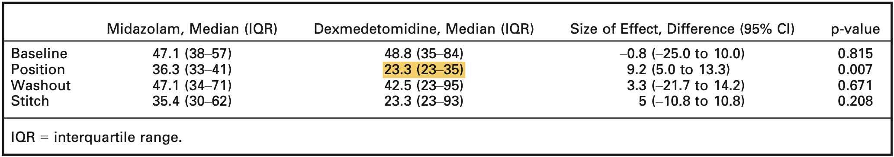
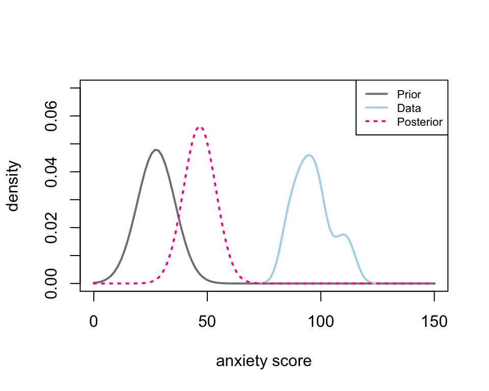
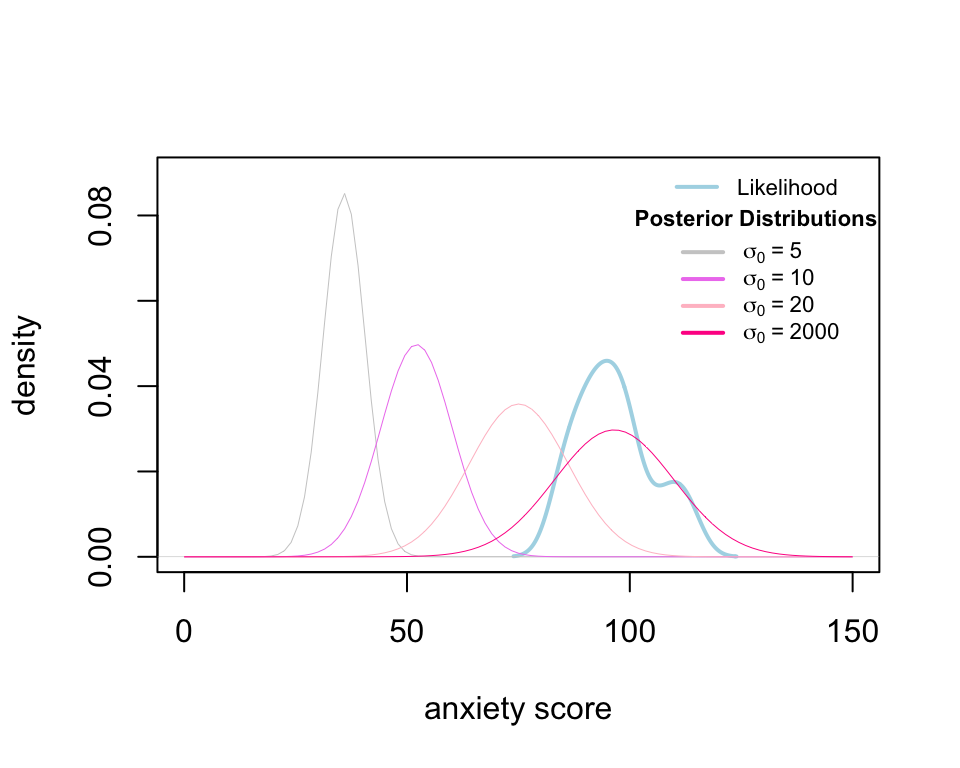
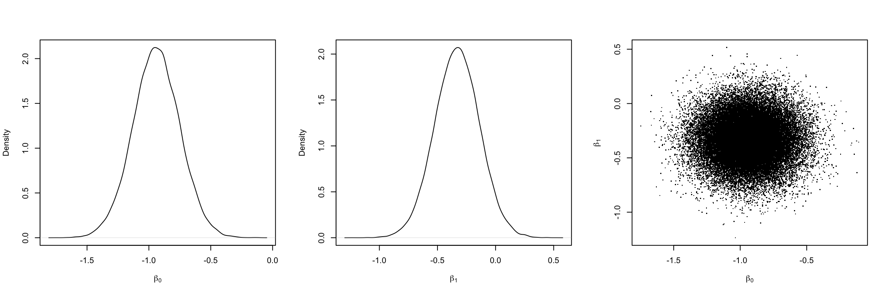
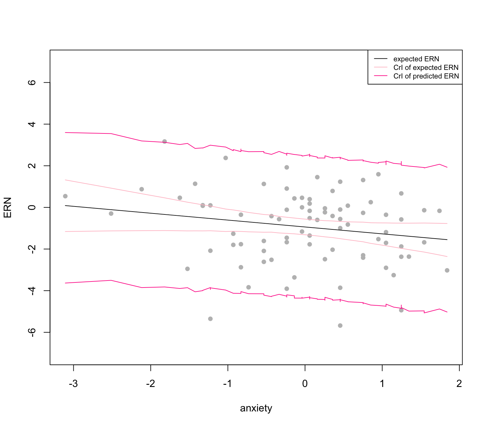
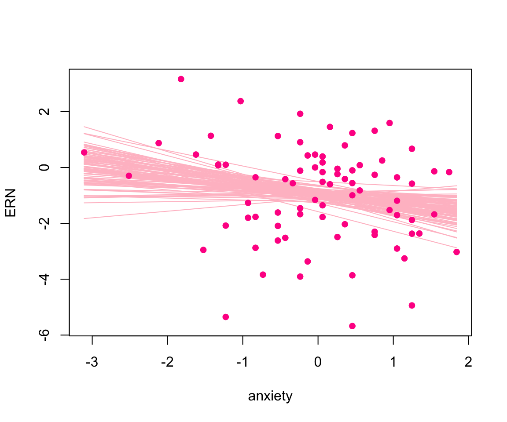

options(scipen = 9999)
if(!library("pacman", logical.return = T)) install.packages("pacman")
pacman::p_load(estmeansd, tidyverse, knitr, brms, HDInterval, LaplacesDemon, brms)
if(!library("rjags", logical.return = T)) install.packages("rjags")
###############################
set.seed(11)
y = rnorm(20, 100, 10) Basic Bayesian Models
(MATH533:Assigment 03)
1 Introduction
Regression is a common task in many fields, where the most statistical training is mainly provided based on the frequentist framework. Conditional on fixed hypotheses, p-value and confidence intervals are the two most frequently used final results, which are reported as the traditional statistical analysis. Although used in numerous contexts, the frequentist framework has still been criticized as the results are obtained based on the assumed null hypothesis which, in fact, is unknown before undertaking analysis [1].
The Bayesian method is a useful tool as the uncertainty of the hypotheses is considered in this framework. Hence, our belief in the hypotheses is reflected via the data observation. Also, This paradigm aids in moving beyond hunting for statistical significance and focusing on other aspects of statistical models such as prediction, model fit, data visualization, and uncertainty [1]. Furthermore, complex models can be developed and evaluated with ease based on the Bayesian framework.
2 Bayesian method and its potential
We start the Bayesian analysis by specifying the prior distribution (or the prior) that reflects a priori information about parameters of interest before we observe the data. The prior distribution is then updated using the data, through the likelihood function, to produce the posterior distribution. This is the reason this framework is deemed the combination of what is learned about the parameters from the data. The prior distribution, therefore, is chosen with little information of the parameters by assigning high uncertainty to the parameters. The specification of prior distribution bases on the expertise of researchers in the area or the relevant studies. The information elicited from studies or researches’ expertise is also call the evidence which is then translated to probabilistic function (i.e. the prior). The function’s domain is the set of all potential values of the parameters. We then adjust the hyper-parameters of the prior such that its mode, mean, and variance align with the evidence. For example, if we know the amount of sugar in blood of diabetes patients is around 126 mg/dL, and we assume it follows Gamma distribution. We then specify the location and rate parameters such that the mode aligns with 126, and the variance reflects the level of uncertainty about 126 (may be measured based on the Fisher-information).
The idea of gathering evidence of the parameters before observing data receives criticism since it proceeds subjectively. However, Baldwin et. al. [1] claimed that the subjectivity is unavoidable and embodied in both the frequentist and Bayesian paradigms. For example, choosing a specific statistical approach among potential methods is also an indication of the subjectivity. Further, collecting the evidence of the hypothesis based on experts in the area before accessing the data may increase the usefulness. This is because the experts often know the topic very well and are able to direct the choice of priors knowingly. Thus, selecting the priors requires in-depth discussion between experts in the area and statisticians who have expertise in the prior elicitation technique and the decision theory.
3 Controlling the uncertainty of elicited Priors
Inherited from the Bayes formula, the posterior distribution is expressed as \(f({\boldsymbol{\theta}}|{\boldsymbol{y}}) \propto f({\boldsymbol{y}}|{\boldsymbol{\theta}})f({\boldsymbol{\theta}})\), where \(f({\boldsymbol{y}}|{{\boldsymbol{\theta}}})\) and \(f({\boldsymbol{\theta}})\) are the likelihood function and the prior. We then adapt it to the linear model \({\boldsymbol{y}} = {\boldsymbol{X\theta}}+ {\boldsymbol{\varepsilon}}\), where \({\boldsymbol{\varepsilon}}\stackrel{iid}{\sim} N({\boldsymbol{0}}, \sigma^2{\boldsymbol{I}})\), and the likelihood function is now the normal density function where the mean is the linear term \({\boldsymbol{X\theta}}\) [2].
\[ f({\boldsymbol{y}}|{\boldsymbol{\theta}}) = \frac{1}{\sqrt{2\pi}\sigma}\times\exp\Big\{-\frac{1}{2\sigma^2}({\boldsymbol{y}} - {\boldsymbol{X\theta}})'({\boldsymbol{y}} - {\boldsymbol{X\theta}})\Big\}. \tag{1}\]
The class of potential prior distributions is broad, so selecting a good prior distribution depends on the different purposes. For example, the conjugacy is a subclass of the prior distributions, where the prior and posterior distribution have the same form [3]. If the conjugate prior is used, the posterior distribution has the closed-form and, thus, we can draw the inference about the parameters with ease. In contrast, if the posterior distribution does not have a closed-form, the Markov chain Monte Carlo (MCMC) or its variants will be employed, and this may increase the computational complexity.
For the illustrative purpose, let \({\boldsymbol{\theta}} = \mu\) and \(\sigma = 60\) and, thus, \({\boldsymbol{X}} = \mu{\boldsymbol{1}}_n\) and \({\boldsymbol{y}}\sim N(\mu{\boldsymbol{1}}_n,60^2{\boldsymbol{1}})\). The normal distribution is now chosen as the prior of \(\mu\)., i.e. \(\mu \sim N(\mu_0,\sigma^2_0)\). We can then show that the posterior distribution of \(\mu\) is also a normal distribution where the mean and the variance are
\[ \mu_{\text{post}} = \bigg(\frac{1}{\sigma^2_0}+\frac{n}{\sigma^2}\bigg)^{-1}\bigg(\frac{\mu_0}{\sigma^2_0} + \frac{\sum_{i=1}^ny_i}{\sigma^2} \bigg), \quad \sigma_{\text{post}} = \bigg(\frac{1}{\sigma^2_0}+\frac{n}{\sigma^2}\bigg)^{-1/2}, \tag{2}\] respectively. Thus, the data \(y_i\) and hyperparameters \((\mu_0,\sigma_0)\) have to be specified before calculating the parameters of the posterior distribution.
Let \(y_i\) (\(i= 1,2,\dots,20\)) is the anxiety score at the position time point of the child \(i\) who received intranasal dexmedetomidine as an anxiolytic for the laceration repair in a pediatric emergency department. We now generate a “fake” data as follows
For the prior, we determine the hyperparameter \(\mu_0\) and \(\sigma^2_0\) based on the evidence from a relevant study, where intranasal dexmedetomidine (IND) versus intranasal midazolam (INM) were assessed in a double-blind randomized controlled trial [4]. Figure 1 shows the anxiety scores reported in the study, and the value of interest is highlighted.

We now specify the hyperparameters \({\boldsymbol{\theta}}_0 =(\mu_0, \sigma_0)\) using the median and IQR of the anxiety score. This can be carried out with ease in R using the package estmeansd (for a more detailed method, refer to Wan et. al. [5]).
thet_0 =
estmeansd::mln.mean.sd(q1.val = 23, med.val = 23.3, q3.val = 35, n = 20)|>
{\(i) i[c("est.mean", "est.sd")]}()|>
unlist()|>
round(2)
mu_0 = thet_0[[1]]
sig_0 = thet_0[[2]]Thus, the hyperparameters are \(\mu_0 =\) 27.48 and \(\sigma_0 =\) 8.32, and the corresponding parameters of the posterior distribution are calculated using Equation 2; then, the corresponding density curve of the likelihood, prior, and posterior distributions are shown in Figure 2.
GetPost1 = function(mu_0, sig_0, sig, y){
sigma2_0 = sig_0^2
sigma2 = sig^2
mu = (mu_0/sigma2_0 +sum(y)/sigma2)*(1/sigma2_0 + length(y)/sigma2)^(-1)
sig = (1/sigma2_0 + length(y)/sigma2)^(-1/2)
c(mu, sig)
}
thet_pos = GetPost1(mu_0, sig_0, 60, y)
mu_pos = thet_pos[1]
sig_pos = thet_pos[2]par(oma = c(0,0,0,0))
curve(dnorm(x, mu_0, sig_0), xlim = c(0,150), ylim = c(0,0.07),
xlab = "anxiety score", ylab = "density", col = "grey50",
lwd = 2
)
lines(density(y), col = "lightblue", lwd = 2)
curve(dnorm(x, mu_pos, sig_pos), add = T, col = "deeppink", lwd = 2, lty = 3)
legend("topright", col = c("grey50", "lightblue", "deeppink"),
legend = c("Prior", "Data", "Posterior"), lty = c(1,1,3), cex = 0.7, lwd = 2)
The posterior distribution (pink) is the combination of the prior (grey) and the likelihood or data (blue). Thus, the posterior density curve can move between the prior and likelihood. The distance between the posterior and the likelihood depends on the sample size and the uncertainty we assign to the prior by specifying the variance (i.e. \(\sigma_0\)). To see this, we calculate four posterior distributions corresponding to \(\sigma_0 = 5, 10, 20\) and \(2000\), respectively.
thet_pos = lapply(c(5, 10, 20, 2000), \(i) GetPost1(mu_0, i, 60, y))
plot(density(y),xlim = c(0,150), ylim = c(0,0.09),
xlab = "anxiety score", ylab = "density", col = "lightblue", main = "",
lwd = 2)
for( i in 1:4){
curve(dnorm(x, thet_pos[[i]][1], thet_pos[[i]][2]),
add = T,
col = c("grey80", "violet", "pink", "deeppink")[i], lwd =0.5, lty = 1)
}
# lines(density(y),xlim = c(0,150), ylim = c(0,0.09),
# xlab = "anxiety score", ylab = "density", col = "lightblue", main = "",
# lwd = 2)
legend(106,0.093, legend = "Likelihood", col = "lightblue", lty = 1,
bty = "n", cex = 0.7, lwd = 2)
legend(100, 0.084, col = c("grey80", "violet", "pink", "deeppink"),
legend = c(
expression(sigma[0] ~ "=" ~ 5),
expression(sigma[0] ~ "=" ~ 10),
expression(sigma[0] ~ "=" ~ 20),
expression(sigma[0] ~ "=" ~ 2000)
),lty = 1, cex = 0.7, lwd =2,
bty = "n", title = as.expression(bquote(bold("Posterior Distributions"))))
Figure 3 depicts the density curve of four posterior distributions. The mean of posterior distribution is closer to that of the data as the prior standard deviation is higher (i.e. more uncertainty about the prior). Roughly speaking, when you assign a very uncertain belief to the parameters, the total information we use to estimate the parameters is from the data.
4 Bayesian models
We consider the Bayesian models that include covariates. the models now become more complicated and no longer is the closed form of posterior distribution guaranteed. As mentioned, MCMC can be used to simulate samples of the posterior distribution, and the inference of the model parameters is drawn based on those samples. The MCMC will be briefly summarized before we consider the model.
4.1 MCMC
MCMC algorithms allow generating data points from a known distribution without a closed-form. This evaluation requires the form of the posterior density up to a constant, i.e., the likelihood for the data as well as the prior for each parameter. MCMC requires thousands and sometime tens of thousands of evaluations of the proposal values. The algorithms require that we decide either yes or no for each proposal. If yes, we keep the proposal value as a valid draw from the posterior. If no, the proposal value is discarded and the most recent accepted values replaces the proposal.
4.2 Model 1: a one-covariate linear model
The row \(i\) of matrix \({\boldsymbol{X}}\) in Equation 1 is now \((1,x_i)\), representing the intercept and slope of the model. The response and covariate of the model are:
Outcome: the error-related negativity (ERN) representing potential neural endophenotype identifying anxiety-related traits and pathology; and
Covariate: the State-Trait Anxiety Inventory (ANX).
Table 1 shows the 5 first and last rows of the data that we use to fit the model.
dat <- read_csv(file = "01A_data/ern_anxiety_data.csv")
slice(dat, c(1:5, c((nrow(dat)-4):nrow(dat))))|>
kable()| id | ern_mean | anxiety | sex |
|---|---|---|---|
| 1 | -0.1139182 | -0.2370106 | 1 |
| 2 | -3.8596835 | 0.4556956 | 1 |
| 3 | -1.7995283 | -0.9297168 | 1 |
| 4 | -0.1023122 | 0.4556956 | 1 |
| 5 | -0.1648984 | 1.7421500 | 1 |
| 77 | -3.9056299 | -0.2370106 | 1 |
| 78 | -2.8752533 | -0.8307587 | 0 |
| 79 | -0.1638889 | 0.0598635 | 1 |
| 80 | -1.1593564 | -0.0390945 | 1 |
| 81 | -1.4591765 | -0.2370106 | 1 |
Given the proposed relationship between ERN amplitude and the trait anxiety, some researchers are suggesting the ERN be used in diagnostic and treatment studies as a potential means for identifying the presence/absence of some forms of trait-like psychopathology and determining if there is neural change following treatment [1].
The model is then \[ ERN_i = \beta_0 + \beta_1ANX_i + \varepsilon_i, \quad \varepsilon_i \stackrel{iid}{\sim} N(0,\sigma^2). \]
To fit the model using the Bayesian framework, we specify the priors as follows: \[ \beta_0, \beta_1 \sim N(0,3), \quad \sigma \sim \text{half-Cauchy}(0, 2.5). \] The credible interval of \(\beta_i\) (\(i=1,2\)) is (-5.67, 5.83), and \(\sigma\) (0, 329.64). These intervals indicate our belief in the parameters before observing the data. the parameters of interest \(\beta_i\) and the redundant parameter \(\sigma\) fall somewhere between \(-5.5\) and \(6\) and \(0\) and \(330\) with the probability of \(95\)%, respectively. Note that the length of the interval of \(\sigma\) is quite long and its upper bound is \(\approx 330\); this implies a very low certainty of \(\sigma\).
We now fit the model using both Bayesian and frequentist frameworks. For Bayesian, we use the rjags. Table 2 depicts the estimates of model parameters, i.e. \(\beta_0\) and \(\beta_1\). Figure 4 shows the density curve of posterior of both model parameters.
# to fit the model using rjags, we need to download and install the jags
# software on the site before do `install.packages("rjags")` in R.
set.seed(394589)
model_dat = list(ern = dat$ern_mean, anxiety = dat$anxiety, n = nrow(dat))
model_string <- textConnection("model{
# Likelihood (dnorm uses a precision, not variance)
for(i in 1:n){
ern[i] ~ dnorm(beta0 + beta1*anxiety[i], tau)
}
# Priors
beta0 ~ dnorm(0, 1/3)
beta1 ~ dnorm(0, 1/3)
tau <- pow(sigma,-2)
sigma ~ dt(0, 1, 1)T(0,)
}")
# (2) Load the data, specify initial values and compile the MCMC code
inits <- list(beta0=rnorm(1),beta1=rnorm(1),sigma = rhalfcauchy(1) )
model <- jags.model(model_string,data = model_dat, inits=inits, n.chains=2)
# (3) Burn-in for 10000 samples
update(model, 10000, progress.bar="none")
# (4) Generate 20000 post-burn-in samples
params_name <- c("beta0","beta1", "sigma")
samples <- coda.samples(model,
variable.names=params_name,
n.iter=20000, progress.bar="none")
# (5) Summarize the output
pos_sim<- lift_dl(rbind)(samples)
par(mfrow = c(1,3))
plot(density(pos_sim[,"beta0"]), lty = 1, xlab = expression(beta[0]), main = "")
plot(density(pos_sim[,"beta1"]), lty = 1, xlab = expression(beta[1]), main = "")
plot(pos_sim, pch = ".", xlab = expression(beta[0]), ylab = expression(beta[1]))
apply(pos_sim[,c("beta0", "beta1")],2,
\(i) c(estimate = mean(i), std.error = sd(i), HDInterval::hdi(i)))|>
t()|>
round(2)|>
as.data.frame()|>
rownames_to_column('term')|>
mutate(term = c("Intercept", "anxiety"))|>
tibble()|>
kable(align = "c")
############################################
lm(ern_mean ~ anxiety, data = dat)|>
broom::tidy()|>
dplyr::select(term, estimate, std.error)|>
mutate(lower = estimate - qnorm(0.975)*std.error,
upper = estimate + qnorm(0.975)*std.error)|>
mutate_if(is.numeric, \(i) round(i,2))|>
kable(align = "c")Table 2: Estimate of the model parameters, \(\beta_0\) and \(\beta_1\), using Bayesian and frequentist framework.
| term | estimate | std.error | lower | upper |
|---|---|---|---|---|
| Intercept | -0.94 | 0.19 | -1.32 | -0.56 |
| anxiety | -0.33 | 0.19 | -0.70 | 0.05 |
| term | estimate | std.error | lower | upper |
|---|---|---|---|---|
| (Intercept) | -0.95 | 0.19 | -1.32 | -0.58 |
| anxiety | -0.33 | 0.19 | -0.71 | 0.04 |
We now investigate the expected ERN, i.e. \(\widehat{\text{ERN}} = \hat\beta_0 + \hat\beta_1\times\text{anxiety}\) and its predicted value. The Figure 5 shows the regression line of expected ERN conditional on the anxiety (in black) and the credible intervals of both expected (light pink) and predicted ERN (deep pink).
set.seed(1111)
par(mfrow = c(1,1))
y_hat = sapply(dat$anxiety, \(i) mean(pos_sim[,c("beta0", "beta1")]%*%c(1,i)))
plot(dat$anxiety, dat$ern_mean, pch = 16, col = "grey", ylim = c(-7,7),
xlab = "anxiety", ylab = "ERN")
lines(dat$anxiety, y_hat, col = "black")
ci = sapply(sort(dat$anxiety), \(i){
pos_sim[,c("beta0", "beta1")]%*%c(1,i)|>
HDInterval::hdi()})|> t()
points(sort(dat$anxiety), ci[,1], pch = 16, col = "pink", type = "l")
points(sort(dat$anxiety), ci[,2], pch = 16, col = "pink", type = "l")
ci_pred<-
apply(pos_sim, 1, \(i){
cbind(1, sort(dat$anxiety))%*%i[-3] + rnorm(nrow(dat),0, i[3])
})|>
t()
ci_pred<- apply(ci_pred,2, HDInterval::hdi)|> t()
points(sort(dat$anxiety), ci_pred[,1], pch = 16, col = "deeppink", type = "l")
points(sort(dat$anxiety), ci_pred[,2], pch = 16, col = "deeppink", type = "l")
legend("topright", col = c("black", "pink", "deeppink"), lty = 1,
legend = c("expected ERN",
"CrI of expected ERN",
"CrI of predicted ERN"), cex = .7)
We may also be interested in visualizing the regression lines corresponding to some simulated parameters. Figure 5 depicts regression lines pertaining to 100 parameters randomly simulated from the posterior distributions.
par(mfrow = c(1,1))
y_hat =
apply(pos_sim, 1, \(i){
cbind(1, sort(dat$anxiety))%*%i[-3] })|>
t()
plot(dat$anxiety, dat$ern_mean, pch = 16, col = "deeppink", xlab = "anxiety",
ylab = "ERN")
s = sample(1:nrow(y_hat), 100)
for(i in s){
lines(sort(dat$anxiety), y_hat[i,], col = "pink")
}
points(dat$anxiety, dat$ern_mean, pch = 16, col = "deeppink")
4.3 Model 2: a two-covariate linear model
We now consider the model 2 where we consider both the anxiety and sex as two covariates of the model. Table 3 shows the estimate, SE and credible intervals of both parameters. Those values in the brackets are the Frequentist estimates.
# to fit the model using rjags, we need to download and install the jags
# software on the site before do `install.packages("rjags")` in R.
set.seed(39585)
model_dat = list(ern = dat$ern_mean, anxiety = dat$anxiety, sex = dat$sex, n = nrow(dat))
model_string <- textConnection("model{
# Likelihood (dnorm uses a precision, not variance)
for(i in 1:n){
ern[i] ~ dnorm(beta0 + beta1*anxiety[i] + beta2*sex[i], tau)
}
# Priors
beta0 ~ dnorm(0, 1/3)
beta1 ~ dnorm(0, 1/3)
beta2 ~ dnorm(0, 1/3)
tau <- pow(sigma,-2)
sigma ~ dt(0, 1, 1)T(0,)
}")
# (2) Load the data, specify initial values and compile the MCMC code
inits <- list(beta0=rnorm(1),beta1=rnorm(1), beta2=rnorm(1), sigma = rhalfcauchy(1) )
model <- rjags::jags.model(model_string,data = model_dat, inits=inits, n.chains=2)
# (3) Burn-in for 10000 samples
update(model, 10000, progress.bar="none")
# (4) Generate 20000 post-burn-in samples
params_name <- c("beta0","beta1", "beta2", "sigma")
samples <- rjags::coda.samples(model,
variable.names=params_name,
n.iter=20000, progress.bar="none")
# (5) Summarize the output
pos_sim<- lift_dl(rbind)(samples)model2fit<-
apply(pos_sim[,c("beta0", "beta1", "beta2")],2,
\(i) c(estimate = mean(i), std.error = sd(i), HDInterval::hdi(i)))|>
t()|>
round(2)|>
as.data.frame()|>
rownames_to_column('term')|>
mutate(term = c("Intercept", "anxiety", "sex"))|>
tibble()|>
mutate(across(where(is.double), \(i) round(i,2)|> as.character()))
# frequentist
m = lm(dat$ern_mean ~ dat$anxiety + dat$sex)|>
broom::tidy()|>
transmute(estimate = estimate, std.error = std.error,
lower = estimate - qt(0.975, 81 -3)*std.error,
upper = estimate + qt(0.975, 81 -3)*std.error)|>
mutate_all(\(i) round(i,2)|> as.character())
model2fit<-
mutate(model2fit,
estimate = paste0(estimate," (", m$estimate,")"),
std.error = paste0(std.error," (", m$std.error,")"),
lower = paste0(lower," (", m$lower,")"),
upper = paste0(upper," (", m$upper,")")
)
kable(model2fit, align = "c")| term | estimate | std.error | lower | upper |
|---|---|---|---|---|
| Intercept | -1.08 (-1.13) | 0.35 (0.37) | -1.75 (-1.87) | -0.36 (-0.4) |
| anxiety | -0.34 (-0.35) | 0.19 (0.19) | -0.72 (-0.73) | 0.03 (0.04) |
| sex | 0.19 (0.25) | 0.41 (0.43) | -0.61 (-0.61) | 1.01 (1.11) |
Another question we should ask after fitting two models is that which model performs the best. This is still a moot point since it depends on how researchers define the criteria to evaluate the models. Baldwin et. al. [1] suggested the three following ways of defining best:
- Choose the model with the most statistically significant predictors;
- Choose the model with the larges value of R\(^2\) (regression) or \(\eta^2\) (ANOVA);
- Choose the most parsimonious.
However, the authors also emphasized that there is no one correct way to define the best. Further, if the prediction is the primary aim, cross-validation could be used to examine out-of-sample prediction. Two metrics that are commonly used are Widely Applicable Information Criterion (WAIC) and Leave- one-out Cross-validation (LOOCV). Both approaches aim to assess the accuracy of making predictions in new samples. Since they approximate the deviance for new samples and, thus, a smaller value indicates the better fit. WAIC and LOOCV is provided by several R packages, including the brms package.
We now obtain LOOCV of the two models using the brms. The WAIC can be obtained in the same manner.
mod1 <- brm(ern_mean ~ anxiety, data = dat,
prior = c(set_prior("normal(0,3)", class = "b"),
set_prior("cauchy(0,2.5)", class = "sigma")),
family = gaussian(), seed = 394589)
mod2 <- update(mod1, formula. = ~ . + sex, newdata = dat, seed = 39585)
### Comparing Models using The WAIC() and LOO() functions from brmsLOO shown in Table 4 indicate that model 1 is better fit than model 2; however, the difference is not statistically significant.
loo_mod = loo(mod1, mod2)
loo_mod$diffs|>
as.data.frame()|>
rownames_to_column("model")|>
select(model, looic, se_looic)|>
mutate_if(is.numeric, round, digits = 3)|>
kable(align = "c")| model | looic | se_looic |
|---|---|---|
| mod1 | 321.136 | 13.654 |
| mod2 | 323.257 | 13.951 |
5 Bayes factors
Another task that interests researchers when using the Bayesian framework is hypothesis testing. Unlike the frequentist paradigm, Bayes method uses the Bayes factor, which is expressed as follows, to evaluate the hypotheses.
\[ \frac{\mathbb{P}(H_A|\text{data})}{\mathbb{P}(H_0|\text{data})} = \frac{\mathbb{P}(\text{data}|H_A)}{\mathbb{P}(\text{data}|H_0)}\times \frac{\mathbb{P}(H_A)}{\mathbb{P}(H_0)}. \]
The term on the left side is the ratio of posterior alternative hypothesis and posterior null hypothesis, the second term on the right side is the ratio of prior alternative hypothesis and the prior null hypothesis, and first term on the right side is the Bayes factor. The Bayes factor quantifies how our belief in \(H_A\) relative to that in \(H_0\) as the result of data. For example, we evaluate the efficacy of two treatments, and \(H_A\) is the statement that the efficacy of two treatments differs while \(H_0\) is that the efficacy of two treatments are the same. A Bayes factor higher than \(1\) implies the data are more likely given \(H_A\) than they are given \(H_0\). I.e., \(H_A\) is more evident than \(H_0\). A full worked example of Bayes factor is beyond the scope of the paper, so the authors did not give details.
In the paper, the authors also discussed the generalized linear and mix models, but we only consider linear models.
6 References
1.
Baldwin SA, Larson MJ. An introduction to using bayesian linear regression with clinical data. Behaviour research and therapy. 2017;98:58–75.
2.
Klauenberg K, Wübbeler G, Mickan B, Harris P, Elster C. A tutorial on bayesian normal linear regression. Metrologia. 2015;52(6):878.
3.
Rencher AC, Schaalje GB. Linear models in statistics. John Wiley & Sons; 2008.
4.
Neville DN, Hayes KR, Ivan Y, McDowell ER, Pitetti RD. Double-blind randomized controlled trial of intranasal dexmedetomidine versus intranasal midazolam as anxiolysis prior to pediatric laceration repair in the emergency department. Academic Emergency Medicine. 2016;23(8):910–7.
5.
Cai S, Zhou J, Pan J. Estimating the sample mean and standard deviation from order statistics and sample size in meta-analysis. Statistical methods in medical research. 2021;30(12):2701–19.